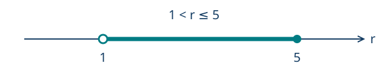
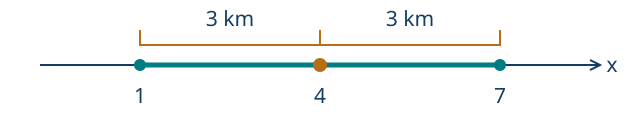

Ecuaciones, inecuaciones y valor absoluto
← El lenguaje del álgebra: expresiones e identidades · Índice del libro · Siguiente →
Al elegir cómo pagar nuestros viajes durante un mes, necesitamos anticipar cuántas veces usaremos el transporte. Un abono puede cobrar una cantidad fija y reducir el precio de cada trayecto, mientras que otra modalidad cobra lo mismo por cada viaje. Con pocos viajes, el cargo inicial pesa mucho; a medida que aumenta la cantidad de trayectos, el ahorro por viaje puede compensarlo. La decisión depende de localizar el punto en que ambos gastos coinciden y comparar lo que sucede a cada lado.
Las expresiones algebraicas permiten seguir esa comparación sin hacer una cuenta independiente para cada mes posible. Una igualdad señalará los valores en que los costos se encuentran; una desigualdad describirá las cantidades para las que conviene una opción. Trabajaremos sobre ambas conservando el significado de la incógnita, porque una respuesta que represente viajes tendrá que ajustarse a un número entero no negativo. Más adelante, las condiciones expresadas mediante distancias nos llevarán al valor absoluto y a los intervalos.
La incógnita tiene que responder una pregunta
Llamaremos solución a cada valor del dominio que hace verdadera la condición planteada. El dominio reúne los valores que tiene sentido considerar: puede ser todo \(\mathbb R\), los enteros no negativos, las longitudes positivas o los reales que no anulan ciertos denominadores. Antes de despejar conviene escribir qué representa la incógnita y dónde puede vivir. Al terminar, volveremos a esa primera decisión.
Problema 1. Dos maneras de pagar los viajes
Enunciado. Un abono mensual cuesta 8400 pesos y permite pagar 300 pesos por viaje. Sin abono, cada viaje cuesta 1000 pesos. ¿Para cuántos viajes mensuales los costos son iguales?
Solución. Sea \(n\) el número de viajes del mes. Es un entero no negativo. El abono produce un costo de \(8400+300n\) pesos y la otra opción cuesta \(1000n\) pesos. La igualdad buscada es \[8400+300n=1000n.\] Restamos \(300n\) a ambos miembros: \(8400=700n\). Dividimos por 700 y obtenemos \(n=12\). Es admisible porque pertenece al dominio. Comprobamos el significado económico: \(8400+300\cdot12=12000\) y \(1000\cdot12=12000\). Los costos coinciden al hacer doce viajes. Aún falta comparar qué plan conviene para otras cantidades; lo haremos al estudiar inecuaciones.
El signo igual expresa una condición entre dos cantidades. Al sustituir \(n=12\) se cumple; al sustituir \(n=10\) no se cumple. Resolver consiste en describir todos los valores para los que se cumple, y justificar que no hemos ganado ni perdido ninguno.
Problema 2. Comprobar antes de confiar
Enunciado. Se proponen \(x=2\) y \(x=3\) como soluciones de \(3(x-1)=x+3\). Decide cuáles sirven y resuelve la ecuación.
Solución. Para \(x=2\), los miembros valen 3 y 5: falla. Para \(x=3\), ambos valen 6: funciona. Para asegurar que no existen más soluciones desarrollamos \(3x-3=x+3\), restamos \(x\) y sumamos 3 a ambos lados. Queda \(2x=6\), de donde \(x=3\). Cada operación se puede deshacer, por lo que hemos encontrado el conjunto completo: \(\{3\}\). Una comprobación confirma un candidato; una cadena reversible justifica además que no falta otro.
Transformaciones equivalentes
Dos ecuaciones son equivalentes en un dominio cuando tienen exactamente las mismas soluciones dentro de él. Sumar la misma expresión, definida en ese dominio, a ambos miembros conserva la igualdad y permite regresar restándola. Multiplicar por un número distinto de cero también es reversible: basta dividir por ese número. El conocido «pasa al otro lado» comprime estas operaciones; entenderlas permite decidir si el paso es legítimo.
Problema 3. Paréntesis y fracciones
Enunciado. Resuelve \(\dfrac{x-2}{3}-\dfrac{x+1}{2}=1\).
Solución. El dominio es \(\mathbb R\): los denominadores son constantes no nulas. Multiplicamos ambos miembros completos por 6: \[2(x-2)-3(x+1)=6.\] El signo menos afecta a todo el segundo numerador. Al distribuir resulta \(2x-4-3x-3=6\), es decir, \(-x-7=6\). Sumando 7 obtenemos \(-x=13\) y, finalmente, \(x=-13\). En la expresión original los cocientes son \(-5\) y \(-6\); su diferencia es 1. Multiplicar por 6 fue reversible y el conjunto solución es \(\{-13\}\).
Problema 4. Cuando las letras desaparecen
Enunciado. Resuelve por separado \(4(x-2)=4x-8\) y \(4(x-2)=4x-7\).
Solución. En la primera obtenemos \(4x-8=4x-8\). Al restar el miembro derecho queda \(0=0\), verdadera para todo real. Su conjunto solución es \(\mathbb R\). En la segunda, el desarrollo y la resta conducen a \(-8=-7\), falsa para cualquier valor de \(x\). Su conjunto solución es \(\varnothing\). Que desaparezca la incógnita es información: la condición final puede ser siempre verdadera o siempre falsa.
Toda ecuación que se reduzca, mediante pasos equivalentes, a \(ax=b\) queda clasificada por sus coeficientes. Si \(a\ne0\), tiene la única solución \(b/a\). Si \(a=0\), debemos examinar \(b\) antes de dividir. La clasificación se refiere al dominio \(\mathbb R\); en un problema contextual todavía hay que intersectar con sus valores admisibles.
Propiedades para transformar ecuaciones
| Propiedad | Fórmula y condiciones de uso |
|---|---|
| Sumar o restar | \(F=G\iff F+H=G+H\), cuando las tres expresiones están definidas en el dominio considerado. |
| Multiplicar o dividir | \(F=G\iff HF=HG\), si \(H\) está definido y nunca vale cero en ese dominio. |
| Una solución lineal | Si \(a\ne0\), \(ax=b\iff x=b/a\). |
| Identidad lineal | Si \(a=0\) y \(b=0\), todo real satisface \(ax=b\). |
| Incompatibilidad lineal | Si \(a=0\) y \(b\ne0\), ningún real satisface \(ax=b\). |
| Restricción del contexto | El conjunto admisible es la intersección de las soluciones algebraicas con el dominio del problema. |
Pruebas. Véanse «Transformaciones que conservan una ecuación» y «Ecuaciones lineales y restricciones del dominio» en el apéndice.
Del relato a una condición verificable
En la comparación de tarifas elegimos como incógnita el número de viajes porque con él podíamos expresar ambos costos. Al construir una ecuación en otro contexto, buscaremos una cantidad que permita hacer lo mismo con los datos del relato. Una vez escrita, podremos leer cada término con su unidad y comprobar qué parte del problema representa: los términos que se suman deben medir una misma magnitud y ambos miembros deben expresar cantidades comparables. Esa lectura da una primera comprobación del modelo antes de resolver la ecuación.
Problema 5. Una mezcla que se completa con agua
Enunciado. Hay 8 litros de una disolución con 30 % de concentrado. ¿Cuánta agua debe añadirse para obtener una disolución al 20 %? Supón que los volúmenes se suman.
Solución. Los 8 litros contienen \(0{,}30\cdot8=2{,}4\) litros de concentrado. Al añadir \(w\) litros de agua, esa cantidad se conserva y el volumen total pasa a \(8+w\). Por ello, \[\frac{2{,}4}{8+w}=0{,}20,\qquad w\ge0.\] En este dominio \(8+w\) es positivo. Podemos multiplicar por él y obtener \(2{,}4=1{,}6+0{,}20w\). Restando \(1{,}6\) y dividiendo por \(0{,}20\) resulta \(w=4\). La mezcla final tiene 12 litros y \(2{,}4/12=0{,}20\). Se necesitan cuatro litros de agua. La hipótesis sobre los volúmenes forma parte del modelo.
Problema 6. Un rectángulo con una condición adicional
Enunciado. Un rectángulo tiene perímetro de 46 cm. El largo supera al ancho en 5 cm. Encuentra sus dimensiones.
Solución. Sea \(a>0\) el ancho en centímetros. El largo es \(a+5\). Como el perímetro suma dos veces cada dimensión, \[2a+2(a+5)=46.\] Distribuimos: \(4a+10=46\). Restando 10 y dividiendo por 4 encontramos \(a=9\). El largo vale 14. Ambos son positivos, difieren en 5 y \(2\cdot9+2\cdot14=46\). Las dimensiones son 9 cm y 14 cm. La comprobación usa las dos condiciones del enunciado.
Problema 7. Una solución algebraica imposible en el relato
Enunciado. Un taller cobra 3500 pesos por preparar una máquina y 800 pesos por pieza. ¿Es posible que el cobro por un pedido sea 2700 pesos?
Solución. Si \(p\) es la cantidad de piezas, necesitamos un entero \(p\ge0\) y la condición \(3500+800p=2700\). Al resolver obtenemos \(800p=-800\), luego \(p=-1\). Ese número satisface la igualdad algebraica, pero no describe un pedido. El conjunto admisible es vacío. También podíamos advertirlo desde el comienzo: para \(p\ge0\), el cobro es al menos 3500 pesos. Resolver y estimar proporcionan aquí controles complementarios.
Los denominadores conservan su historia
Una cancelación válida puede simplificar una fórmula y dejar una restricción pendiente. La igualdad \((x^2-1)/(x-1)=x+1\) vale para \(x\ne1\). La expresión de la derecha existe también en 1; ese valor adicional no pertenecía al dominio de la izquierda. Escribiremos las exclusiones antes de cancelar.
Problema 8. Un candidato fuera del dominio
Enunciado. Resuelve \(\dfrac{x^2-1}{x-1}=2\).
Solución. El dominio excluye \(x=1\). Para los valores restantes, factorizamos \(x^2-1=(x-1)(x+1)\) y cancelamos el factor no nulo. La ecuación equivale, en ese dominio, a \(x+1=2\). El único candidato es \(x=1\), que estaba excluido. Por tanto, no hay solución. Sustituirlo en la ecuación original produciría un denominador cero; la simplificación no autoriza a rehabilitarlo.
Problema 9. Una ecuación racional con solución
Enunciado. Resuelve \(\dfrac{2}{x-1}=\dfrac{3}{x+2}\).
Solución. Excluimos \(x=1\) y \(x=-2\). En el resto del dominio el producto \((x-1)(x+2)\) nunca se anula. Multiplicar por él es reversible y produce \(2(x+2)=3(x-1)\). Entonces \(2x+4=3x-3\), de donde \(x=7\). Es admisible y los dos cocientes originales valen \(1/3\). El conjunto solución es \(\{7\}\). Para una igualdad no importa que el producto usado sea positivo o negativo: importa que sea distinto de cero.
Problema 10. Dividir por la incógnita puede borrar una solución
Enunciado. Un estudiante resuelve \(x(x-3)=0\) dividiendo por \(x\) y obtiene \(x=3\). Revisa el procedimiento.
Solución. Dividir por \(x\) exige suponer \(x\ne0\). Bajo esa condición, queda \(x-3=0\) y obtenemos \(x=3\). Falta examinar el caso apartado: \(x=0\) satisface la ecuación inicial. Como un producto de reales es cero precisamente cuando alguno de sus factores es cero, las soluciones son 0 y 3. La separación de casos justifica ambos valores y asegura que no hay más. La división era válida únicamente en la rama donde \(x\ne0\).
Desigualdades: resolver una región
Una inecuación plantea una desigualdad entre expresiones; sus soluciones son los valores del dominio que la hacen verdadera. Si \(u<v\), sumar la misma cantidad a ambos mantiene el orden. Multiplicar por \(c>0\) también lo mantiene; multiplicar por \(c<0\) lo invierte. Para comprender esta última regla, observemos que \(v-u>0\): al multiplicar por un negativo obtenemos \(c(v-u)<0\), equivalente a \(cv<cu\).
Problema 11. Qué abono conviene
Enunciado. Con las tarifas del primer problema, ¿para cuántos viajes el abono resulta estrictamente más barato?
Solución. Planteamos \(8400+300n<1000n\), con \(n\) entero no negativo. Al restar \(300n\) y dividir por el positivo 700, resulta \(12<n\). Los viajes posibles son \(13,14,15,\ldots\). Para doce viajes hay empate, por lo que doce no entra en la respuesta. Para diez, el abono cuesta 11400 pesos y la otra opción 10000; para trece, cuesta 12300 frente a 13000. Estas comprobaciones confirman la orientación de la desigualdad.
Problema 12. Un coeficiente negativo
Enunciado. Resuelve \(5-3(2x-1)\le2x+12\) y representa la solución mediante un intervalo.
Solución. Distribuimos: \(8-6x\le2x+12\). Restamos \(2x\) y 8 a ambos lados y queda \(-8x\le4\). Al dividir por \(-8\) debemos invertir el sentido: \(x\ge-1/2\). El intervalo solución es \([-1/2,\infty)\). El extremo se incluye porque la desigualdad admite igualdad: en \(x=-1/2\) ambos miembros valen 11. En \(x=0\) obtenemos \(8\le12\), como corresponde al intervalo encontrado.
La palabra y exige satisfacer simultáneamente dos condiciones: usamos la intersección de sus conjuntos solución. La palabra o, en su sentido inclusivo, admite cumplir cualquiera de ellas: usamos la unión. Los extremos incluidos se marcan con corchetes; el infinito siempre lleva paréntesis porque no es un número real que podamos alcanzar.
Problema 13. Una banda de temperatura
Enunciado. Una lectura corregida vale \(T=2r-3\), en grados Celsius. Debe cumplir \(-1<T\le7\). ¿Qué valores de la lectura \(r\) se aceptan?
Solución. Sustituimos la fórmula y conservamos simultáneamente las dos condiciones: \[-1<2r-3\le7.\] Sumamos 3 a los tres miembros: \(2<2r\le10\). Dividimos por 2: \(1<r\le5\). Se acepta \(r\in(1,5]\). El extremo 1 produciría \(T=-1\) y queda fuera; el extremo 5 produce \(T=7\) y entra. El dibujo distingue esa diferencia mediante un punto vacío y otro lleno.

Problema 14. Dos formas de combinar condiciones
Enunciado. Compara las soluciones de «\(2x-1\ge3\) y \(x+4<5\)» con las de «\(2x-1\ge3\) o \(x+4<5\)».
Solución. La primera condición equivale a \(x\ge2\) y la segunda a \(x<1\). Ningún real satisface ambas a la vez: la intersección es vacía. Cuando se pide una u otra, aceptamos todos los valores menores que 1 y todos los mayores o iguales que 2. La unión es \((-\infty,1)\cup[2,\infty)\). Los valores de \([1,2)\) no cumplen ninguna. La operación entre conjuntos depende de la conexión lógica del enunciado.
Propiedades para resolver inecuaciones
| Propiedad | Fórmula y condiciones de uso |
|---|---|
| Traslación del orden | \(F<G\iff F+H<G+H\), con expresiones reales definidas. También vale para \(\le\). |
| Factor positivo | Si \(H>0\) en el dominio, \(F<G\iff HF<HG\). También vale para \(\le\). |
| Factor negativo | Si \(H<0\) en el dominio, \(F<G\iff HF>HG\). Con \(\le\) se obtiene \(\ge\). |
| Dos condiciones simultáneas | La solución de «\(P\) y \(Q\)» es \(S_P\cap S_Q\). |
| Condiciones alternativas | La solución de «\(P\) o \(Q\)» es \(S_P\cup S_Q\). |
| Cero en un producto o cociente | Al comparar con cero mediante una desigualdad no estricta, se admiten los valores del dominio que anulan el producto o el numerador del cociente. En una desigualdad estricta se excluyen; los ceros del denominador siempre quedan fuera del dominio. |
Pruebas. Véanse «Signos y compatibilidad del orden» e «Inecuaciones, conjuntos y análisis por casos» en el apéndice.
Si el signo depende de la incógnita
Multiplicar una desigualdad por \(x-2\) exige saber de qué lado de 2 estamos. Podemos separar dominios o estudiar directamente los signos del cociente. Los valores que anulan un factor dividen la recta en intervalos; dentro de cada uno los factores lineales conservan su signo. Hay que revisar los puntos de separación por separado.
Problema 15. Un cociente frente a cero
Enunciado. Resuelve \(\dfrac{x+1}{x-2}\ge0\).
Solución. El dominio excluye 2 y el numerador se anula en \(-1\). Si \(x<-1\), ambos factores son negativos y el cociente es positivo. Si \(-1<x<2\), el numerador es positivo y el denominador negativo: el cociente es negativo. Si \(x>2\), ambos son positivos. En \(x=-1\) el cociente vale cero y se admite; en 2 no existe. La solución es \((-\infty,-1]\cup(2,\infty)\). Multiplicar directamente por \(x-2\) sin discutir su signo habría mezclado dos reglas distintas.
Problema 16. Comparar un cociente con uno
Enunciado. Resuelve \(\dfrac{3}{x-1}\le1\).
Solución. Excluimos 1. Restamos 1 y usamos un denominador común: \[\frac{3}{x-1}-1=\frac{4-x}{x-1}\le0.\] Los puntos de separación son 1 y 4. Para \(x<1\) el numerador es positivo y el denominador negativo, por lo que sirve todo ese intervalo. Para \(1<x<4\) ambos son positivos y no sirve. Para \(x>4\) el numerador es negativo y el denominador positivo, y vuelve a servir. El 4 se incluye porque da igualdad; el 1 está prohibido. Obtenemos \((-\infty,1)\cup[4,\infty)\). Por ejemplo, \(x=0\) da \(-3\le1\) y \(x=2\) da \(3\le1\), falsa.
El valor absoluto describe distancias
La expresión \(\lvert x-a\rvert\) mide la distancia entre \(x\) y \(a\) en la recta real. Para localizar los puntos cuya distancia es \(r>0\), podemos partir de \(a\) y recorrer \(r\) unidades en cada sentido: obtenemos un punto a su izquierda y otro a su derecha. Al pedir una distancia menor que \(r\), quedan los puntos situados entre esas dos posiciones; al pedir una distancia mayor, quedan las dos regiones exteriores. Esa construcción permite decidir si necesitamos dos alternativas o un intervalo de condiciones simultáneas antes de retirar las barras en el cálculo.
Problema 17. A una distancia fijada
Enunciado. Resuelve \(\lvert 2x-3\rvert =5\).
Solución. Un número tiene valor absoluto 5 precisamente cuando es 5 o \(-5\). Por ello, \(2x-3=5\) o \(2x-3=-5\). Las dos ecuaciones dan \(x=4\) y \(x=-1\). Al sustituir obtenemos \(\lvert 8-3\rvert =5\) y \(\lvert -2-3\rvert =5\). También podemos escribir \(\lvert 2x-3\rvert =2\lvert x-3/2\rvert\): los puntos buscados están a \(5/2\) de \(3/2\). La descripción por dos casos comprende todas las posibilidades.
Problema 18. Una tolerancia de fabricación
Enunciado. Una pieza debe medir \(20{,}0\) mm con una tolerancia máxima de \(0{,}15\) mm. Escribe y resuelve la condición sobre su longitud \(L\).
Solución. La desviación respecto del objetivo es \(L-20{,}0\), que puede ser positiva o negativa. Su tamaño es \(\lvert L-20{,}0\rvert\). La tolerancia máxima incluye sus extremos: \[|L-20{,}0|\le0{,}15.\] Esto equivale a \(-0{,}15\le L-20{,}0\le0{,}15\). Al sumar \(20{,}0\) obtenemos \(19{,}85\le L\le20{,}15\). Se aceptan longitudes del intervalo \([19{,}85,20{,}15]\) mm. Ambas longitudes extremas se apartan exactamente \(0{,}15\) mm del objetivo.
Problema 19. Fuera de una zona central
Enunciado. Resuelve \(\lvert 3x+2\rvert >4\).
Solución. Estar a distancia mayor que 4 del cero significa quedar a la izquierda de \(-4\) o a la derecha de 4. Así, \(3x+2<-4\) o \(3x+2>4\). La primera da \(x<-2\); la segunda, \(x>2/3\). La unión es \((-\infty,-2)\cup(2/3,\infty)\). Los extremos no se incluyen porque allí el valor absoluto vale exactamente 4. El punto \(x=0\) queda en la zona intermedia y produce 2, por lo que correctamente se rechaza.
Problema 20. Un radio que también depende de la incógnita
Enunciado. Resuelve \(\lvert x-2\rvert \le x\).
Solución. El miembro izquierdo es no negativo; por tanto, hace falta \(x\ge0\). En ese dominio la condición equivale a \(-x\le x-2\le x\). La desigualdad izquierda da \(2\le2x\), es decir, \(x\ge1\). La derecha se reduce a \(-2\le0\), siempre verdadera. Intersectando las condiciones obtenemos \([1,\infty)\). En \(x=1\) los miembros valen 1; para \(x>2\), el izquierdo es \(x-2\) y nunca supera a \(x\). Si el supuesto radio fuese negativo, ninguna distancia podría ser menor o igual que él.
Propiedades del valor absoluto como condición
| Propiedad | Fórmula y condiciones de uso |
|---|---|
| Distancia exacta positiva | Si \(r>0\), \(\lvert u\rvert =r\iff u=r\) o \(u=-r\). |
| Radio cero o negativo | \(\lvert u\rvert =0\iff u=0\). Si \(r<0\), \(\lvert u\rvert =r\) y \(\lvert u\rvert \le r\) no tienen solución real. |
| Banda cerrada | Para \(r\ge0\), \(\lvert u\rvert \le r\iff-r\le u\le r\). |
| Banda abierta | Para \(r>0\), \(\lvert u\rvert <r\iff-r<u<r\). Si \(r\le0\), no hay solución. |
| Exterior abierto | Para \(r\ge0\), \(\lvert u\rvert >r\iff u<-r\) o \(u>r\). Si \(r<0\), se cumple para todo \(u\) real. |
| Exterior cerrado | Para \(r\ge0\), \(\lvert u\rvert \ge r\iff u\le-r\) o \(u\ge r\). Si \(r<0\), se cumple para todo \(u\) real. |
| Centro y escala | Si \(a\ne0\), \(\lvert ax+b\rvert =\lvert a\rvert \,\lvert x+b/a\rvert\). |
| Dos distancias | \(\lvert u\rvert =\lvert v\rvert \iff u=v\) o \(u=-v\), para \(u,v\) reales. |
Pruebas. Véanse «Valor absoluto, distancia e intervalos» y «Distancias y condiciones con valor absoluto» en el apéndice.
Problema 21. Igual distancia a dos señales
Enunciado. Dos señales están en las posiciones 1 y 7 de una carretera recta, medidas en kilómetros desde un origen. ¿En qué posición se cumple \(\lvert x-1\rvert =\lvert x-7\rvert\)?
Solución. La igualdad de valores absolutos permite \(x-1=x-7\) o \(x-1=-(x-7)\). La primera produciría \(-1=-7\) y es imposible. La segunda da \(x-1=-x+7\), luego \(2x=8\) y \(x=4\). Está a tres kilómetros de cada señal. Fuera del segmento que une ambas señales, las distancias difieren en seis kilómetros; dentro del segmento se igualan en su punto medio.

Casos, candidatos y parámetros
Una transformación puede conservar solo una de las dos implicaciones. Si \(F=G\), entonces \(F^2=G^2\). El regreso exige más información: 3 y \(-3\) tienen el mismo cuadrado. Después de un paso de este tipo obtenemos candidatos que debemos comprobar en la condición original. La justificación de que la respuesta es completa exige obtener todos los candidatos de la condición transformada y comprobar cuáles satisfacen la original. Llevar un registro de las hipótesis permite recuperar una equivalencia.
Problema 22. El cuadrado introduce un candidato
Enunciado. Resuelve \(\sqrt{x+2}=x\).
Solución. Para que exista la raíz necesitamos \(x\ge-2\). Además, la raíz principal es no negativa, así que cualquier solución debe cumplir \(x\ge0\). Elevando al cuadrado obtenemos \(x+2=x^2\), equivalente a \((x-2)(x+1)=0\). Los candidatos son 2 y \(-1\). El segundo incumple \(x\ge0\): en la ecuación original daría \(1=-1\). El primero produce \(\sqrt4=2\) y sirve. El conjunto solución es \(\{2\}\). La factorización pertenece al álgebra ya estudiada; aquí importa controlar el sentido lógico del paso al cuadrado.
Problema 23. Una familia con un valor excepcional
Enunciado. Según el valor real de \(k\), resuelve \((k-2)x=k^2-4\).
Solución. Factorizamos \(k^2-4=(k-2)(k+2)\). Si \(k\ne2\), podemos dividir por \(k-2\) y resulta la única solución \(x=k+2\). Si \(k=2\), la ecuación original es \(0x=0\) y todo real es solución. En particular, para \(k=-2\) el coeficiente es \(-4\) y la solución es 0: ese valor no constituye una excepción. El análisis se decide por el coeficiente de \(x\), antes de efectuar la división.
Problema 24. El parámetro cambia el sentido
Enunciado. Clasifica las soluciones de \((k-1)x\le2\) para todo parámetro real \(k\).
Solución. Si \(k>1\), el coeficiente es positivo y dividir mantiene el sentido: \(x\le2/(k-1)\). Si \(k<1\), es negativo y el sentido se invierte: \(x\ge2/(k-1)\). Si \(k=1\), queda \(0\le2\), verdadera para todo \(x\in\mathbb R\). Estas tres ramas agotan los parámetros reales. Por ejemplo, \(k=0\) da \(-x\le2\), o \(x\ge-2\); \(k=2\) da \(x\le2\). La expresión \(2/(k-1)\) solo aparece en las ramas donde existe.
Propiedades para controlar casos excepcionales
| Propiedad | Fórmula y condiciones de uso |
|---|---|
| Producto nulo | Para reales \(u,v\), \(uv=0\iff u=0\) o \(v=0\). |
| Paso al cuadrado | \(u=v\Rightarrow u^2=v^2\). El regreso equivale a \(u=v\) o \(u=-v\). |
| Raíz principal | \(\sqrt F=G\iff F=G^2\) y \(G\ge0\), en los puntos donde \(F,G\) son reales. La igualdad \(F=G^2\) garantiza \(F\ge0\). |
| Parámetro lineal | En \(a(k)x=b(k)\) se aplica la clasificación de \(ax=b\) para cada \(k\) donde los coeficientes existen. |
| Parámetro en una inecuación | En \(a(k)x\le b(k)\), dividir conserva el sentido si \(a(k)>0\) y lo invierte si \(a(k)<0\). Si \(a(k)=0\), se comprueba \(0\le b(k)\). |
Pruebas. Véanse «Opuestos, inversos y productos nulos», «Ecuaciones lineales y restricciones del dominio», «Inecuaciones, conjuntos y análisis por casos» y «Transformaciones y candidatos espurios» en el apéndice.
Ejercicios para trabajar sin profesor
Antes de resolver cada condición, declara su dominio. Al terminar, escribe el conjunto solución y comprueba los valores excepcionales. En los modelos, la respuesta debe conservar las unidades y las restricciones del relato.
1. Una entrada de socio cuesta 2500 pesos al mes más 700 por visita; una entrada sin socio cuesta 1200 por visita. ¿Con cuántas visitas los costos coinciden?
2. Resuelve \(5(x-2)=2x+8\) y verifica el resultado.
3. Resuelve \((2x+1)/4-(x-3)/6=2\).
4. Resuelve por separado \(3(2x-1)=6x-3\) y \(3(2x-1)=6x+1\).
5. Se tienen 6 litros de disolución al 40 %. ¿Cuánta agua hay que añadir para bajar al 25 %, suponiendo volúmenes aditivos?
6. Un rectángulo tiene perímetro de 64 cm y el largo excede al ancho en 8 cm. Encuentra las dimensiones.
7. Una caja vacía pesa 1,8 kg y cada objeto que se coloca dentro pesa 0,4 kg. ¿Puede pesar 1,4 kg con algún número no negativo de objetos?
8. Resuelve \((x^2-4)/(x-2)=4\).
9. Resuelve \(3/(x-2)=2/(x+1)\).
10. Resuelve \((x+2)(x-5)=0\) y explica por qué no conviene cancelar de entrada ninguno de los factores.
11. Con las tarifas del ejercicio 1, ¿cuándo resulta estrictamente más barata la opción de socio?
12. Resuelve \(7-2(3x+1)>x-9\).
13. Resuelve \(-4\le3x+2<11\).
14. Resuelve «\(x+2<0\) o \(2x\ge6\)». Después cambia «o» por «y» y compara.
15. Resuelve \((x-3)/(x+2)\le0\).
16. Resuelve \(2/(x+1)>1\).
17. Resuelve \(\lvert 3x+1\rvert =7\).
18. Una resistencia debe valer 100 ohmios con tolerancia máxima de 2 ohmios. Expresa la condición con valor absoluto y como intervalo.
19. Resuelve \(\lvert 2x-1\rvert \ge5\).
20. Resuelve \(\lvert x+1\rvert \le2x-1\).
21. Encuentra la posición equidistante de los puntos \(-2\) y 6 mediante una ecuación de valor absoluto.
22. Resuelve \(\sqrt{x+6}=x\) y descarta explícitamente los candidatos que fallen.
23. Clasifica las soluciones de \((k+1)x=k^2-1\) según el parámetro real \(k\).
24. Clasifica las soluciones de \((k+2)x>3\) según el parámetro real \(k\).
Soluciones desarrolladas
Ejercicio 1. Costos iguales
Sea \(n\in\{0,1,2,\ldots\}\) el número de visitas. Los costos son \(2500+700n\) y \(1200n\) pesos. Al igualarlos, restar \(700n\) y dividir por 500 obtenemos \(n=5\). Es admisible y ambas tarifas producen 6000 pesos. La igualdad ocurre con cinco visitas.
Ejercicio 2. Distribuir y reunir
El dominio es \(\mathbb R\). Distribuimos: \(5x-10=2x+8\). Restando \(2x\) y sumando 10 obtenemos \(3x=18\), de donde \(x=6\). La comprobación da \(5(6-2)=20\) y \(2\cdot6+8=20\). Los pasos son reversibles y la solución es única.
Ejercicio 3. Un múltiplo común
Los denominadores constantes permiten todo real. Multiplicamos por 12: \(3(2x+1)-2(x-3)=24\). Al distribuir queda \(6x+3-2x+6=24\), luego \(4x=15\). La solución es \(x=15/4\). Sus cocientes son \(17/8\) y \(1/8\); su diferencia vale 2. El signo delante del segundo paréntesis es esencial.
Ejercicio 4. Todos o ninguno
En la primera ecuación, desarrollar produce \(6x-3=6x-3\). Es una identidad y el conjunto solución es \(\mathbb R\). En la segunda obtenemos \(6x-3=6x+1\); al restar \(6x\) queda \(-3=1\). Ningún real puede satisfacerla y el conjunto es \(\varnothing\).
Ejercicio 5. Conservar el concentrado
Hay \(6\cdot0{,}40=2{,}4\) litros de concentrado. Si se añaden \(w\ge0\) litros de agua, necesitamos \(2{,}4/(6+w)=0{,}25\). El denominador es positivo y podemos multiplicar: \(2{,}4=1{,}5+0{,}25w\). Entonces \(0{,}9=0{,}25w\) y \(w=3{,}6\). El volumen final es 9,6 litros y \(2{,}4/9{,}6=0{,}25\). Se añaden 3,6 litros de agua.
Ejercicio 6. Dos dimensiones positivas
Sea \(a>0\) el ancho en centímetros. El largo es \(a+8\). El perímetro exige \(2a+2(a+8)=64\), o \(4a+16=64\). De aquí \(a=12\) y el largo es 20. Ambas dimensiones son positivas; su diferencia vale 8 y su perímetro es \(24+40=64\) cm.
Ejercicio 7. Una masa imposible
Sea \(n\) un entero no negativo. El modelo es \(1{,}8+0{,}4n=1{,}4\), con masas en kilogramos. Restar 1,8 y dividir por 0,4 conduce a \(n=-1\), fuera del dominio. No existe tal cantidad de objetos. Para cualquier \(n\ge0\), la masa total es al menos 1,8 kg, lo que confirma la imposibilidad.
Ejercicio 8. Una exclusión que permanece
Excluimos \(x=2\). Como \(x^2-4=(x-2)(x+2)\), para \(x\ne2\) la ecuación equivale a \(x+2=4\). Su único candidato es 2 y no pertenece al dominio original. Por tanto, el conjunto solución es vacío. No se puede verificar ese candidato en una fracción cuyo denominador se anula.
Ejercicio 9. Denominadores distintos de cero
El dominio excluye 2 y \(-1\). Multiplicando por el producto no nulo de los denominadores obtenemos \(3(x+1)=2(x-2)\). Desarrollamos: \(3x+3=2x-4\), luego \(x=-7\). Es admisible. Los cocientes originales valen \(-1/3\) en ambos miembros, así que el conjunto solución es \(\{-7\}\).
Ejercicio 10. Dos factores, dos posibilidades
El producto se anula cuando \(x+2=0\) o \(x-5=0\). Obtenemos \(x=-2\) o \(x=5\). Cada uno hace cero un factor y, por ello, el producto. Cancelar \(x+2\) exigiría \(x\ne-2\) y borraría la primera solución; cancelar \(x-5\) exigiría \(x\ne5\) y borraría la segunda. La propiedad del producto nulo comprende ambos casos.
Ejercicio 11. Una comparación estricta
Para un entero \(n\ge0\) planteamos \(2500+700n<1200n\). Restamos \(700n\) y dividimos por 500: \(5<n\). Conviene ser socio a partir de seis visitas mensuales. Cinco produce empate y se excluye. Con seis visitas se pagan 6700 pesos como socio y 7200 sin serlo.
Ejercicio 12. Dividir por un negativo
Distribuimos y reunimos: \(5-6x>x-9\), luego \(14>7x\). Dividiendo por 7 obtenemos \(x<2\). También podía escribirse \(-7x>-14\) y dividir por \(-7\), invirtiendo el sentido. La solución es \((-\infty,2)\). En \(x=2\) ambos miembros valen \(-7\), de modo que el extremo no satisface la desigualdad estricta.
Ejercicio 13. Dos extremos diferentes
Restamos 2 a los tres miembros: \(-6\le3x<9\). Dividiendo por el positivo 3 queda \(-2\le x<3\). El intervalo es \([-2,3)\). El extremo \(-2\) produce \(-4\), admitido; el extremo 3 produce 11, excluido. Se exige cumplir las dos desigualdades a la vez.
Ejercicio 14. Unión e intersección
La primera condición equivale a \(x<-2\) y la segunda a \(x\ge3\). Con «o» la solución es \((-\infty,-2)\cup[3,\infty)\). Con «y» debemos intersectar: ningún real puede ser menor que \(-2\) y mayor o igual que 3 simultáneamente. La solución de esa segunda pregunta es \(\varnothing\).
Ejercicio 15. Un cociente no positivo
Excluimos \(x=-2\) y el numerador se anula en 3. Si \(x<-2\), ambos factores son negativos y el cociente es positivo. Si \(-2<x<3\), los signos son negativo y positivo, y el cociente es negativo. Si \(x>3\), ambos son positivos. Admitimos el tramo central y el cero del numerador: \((-2,3]\). El cero del denominador siempre queda fuera.
Ejercicio 16. Llevar la comparación a cero
El dominio excluye \(-1\). Restando 1 obtenemos \((1-x)/(x+1)>0\). Para \(x<-1\), el cociente es negativo; para \(-1<x<1\), es positivo; para \(x>1\), es negativo. El punto 1 produce cero y no se admite, mientras que \(-1\) está fuera del dominio. La solución es \((-1,1)\). En \(x=0\) la condición original es \(2>1\).
Ejercicio 17. Dos ramas lineales
La igualdad equivale a \(3x+1=7\) o \(3x+1=-7\). La primera da \(x=2\) y la segunda \(x=-8/3\). Sustituyendo, las expresiones dentro de las barras valen 7 y \(-7\), respectivamente. Sus valores absolutos son 7 y el conjunto solución es \(\{-8/3,2\}\).
Ejercicio 18. Una banda cerrada
Si \(R\) es el valor de la resistencia en ohmios, la condición es \(\lvert R-100\rvert \le2\). Equivale a \(-2\le R-100\le2\). Sumando 100 resulta \(98\le R\le102\). Se acepta el intervalo \([98,102]\) ohmios; ambos extremos alcanzan la tolerancia máxima y están incluidos.
Ejercicio 19. Dos regiones exteriores
Como el umbral 5 es positivo, necesitamos \(2x-1\le-5\) o \(2x-1\ge5\). La primera rama da \(x\le-2\) y la segunda \(x\ge3\). El conjunto solución es \((-\infty,-2]\cup[3,\infty)\). Los dos extremos producen valor absoluto 5 y se incluyen porque aparece \(\ge\).
Ejercicio 20. Un umbral variable
Primero exigimos \(2x-1\ge0\), es decir, \(x\ge1/2\). Después resolvemos \(-(2x-1)\le x+1\le2x-1\). La primera desigualdad equivale a \(-2x+1\le x+1\), o \(x\ge0\). La segunda da \(x\ge2\). La intersección de las tres restricciones es \([2,\infty)\). Para esos valores \(x+1\) es positivo y la condición original se reduce a \(x+1\le2x-1\), confirmando el resultado.
Ejercicio 21. El punto medio
La ecuación es \(\lvert x+2\rvert =\lvert x-6\rvert\). Sus ramas son \(x+2=x-6\), imposible, y \(x+2=-(x-6)\). Esta última da \(2x=4\), luego \(x=2\). Las distancias son \(\lvert 2+2\rvert =4\) y \(\lvert 2-6\rvert =4\). El punto se encuentra en el centro del segmento que une \(-2\) con 6.
Ejercicio 22. Candidatos al cuadrado
La raíz exige \(x\ge-6\) y la igualdad exige además \(x\ge0\). Al cuadrar obtenemos \(x+6=x^2\), luego \((x-3)(x+2)=0\). Los candidatos son 3 y \(-2\). El segundo falla: \(\sqrt4=2\ne-2\). El primero cumple \(\sqrt9=3\). El conjunto solución es \(\{3\}\). La condición de signo identifica exactamente el candidato espurio.
Ejercicio 23. Un coeficiente que puede anularse
Factorizamos el segundo miembro: \((k+1)x=(k+1)(k-1)\). Si \(k\ne-1\), dividir por \(k+1\) produce la única solución \(x=k-1\). Si \(k=-1\), queda \(0x=0\) y todo real sirve. Para \(k=1\) no se anula el coeficiente de \(x\) y la única solución es 0. Se ha revisado cada posible excepción antes de dividir.
Ejercicio 24. Tres ramas de un parámetro
Si \(k>-2\), el coeficiente \(k+2\) es positivo y obtenemos \(x>3/(k+2)\). Si \(k<-2\), es negativo y queda \(x<3/(k+2)\). Si \(k=-2\), la condición es \(0>3\), falsa: no hay solución. Estas tres ramas cubren todos los parámetros reales y ninguna usa una división por cero.
Diagnóstico de salida
Para resolver una condición de manera autónoma debes poder explicar por qué cada transformación es reversible, dónde una división exige separar casos y cómo la respuesta respeta el dominio. Comprueba también que distingues la unión de la intersección, que justificas el cambio de sentido al dividir por un negativo y que interpretas las barras como una distancia. Si un cálculo produce una respuesta extraña, vuelve a la condición inicial: allí se decide qué valores son soluciones.
← El lenguaje del álgebra: expresiones e identidades · Índice del libro · Siguiente →